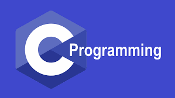

Welcome to the C Programming section!

C is a general-purpose programming language created by Dennis Ritchie at Bell Labs in 1972.It is popular because it is fast, widely supported, and helps you understand how programs work "under the hood".The main reason for its popularity is because it is a fundamental language in the field of computer science.C is closely connected to UNIX, because much of UNIX was written in C.
Learning C can be beneficial for several reasons: